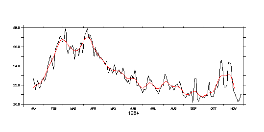

FAQ
Best Filters
Best Filters
Question:
Which are the best filters to use for high and low-pass filtering?
Example:

Explanation:
The best feature of the triangle filter (@spz) is that its frequency response functions are easy to work with. The reason really is that a triangle is just a boxcar (@sbx) applied twice, and the boxcar ha ssimple properties.
Try it: take some time series you have lying around, say it is the Ferret variable "ts". Then try:
let tssbx3=ts[l=@sbx:3] plot tssbx3[l=@sbx:3],ts[l=@spz:5] ! lines are the same
or
let tssbx11=ts[l=@sbx:11] plot tssbx11[l=@sbx:11],ts[l=@spz:21] ! lines are the same
The boxcar filter of length n applied twice is exactly the same as the triangle filter of length (2n-1).
The frequency response of the boxcar filter is the sinc function:
sinc(x) = sin(pi*x)/(pi*x)
where x is frequency, and the value of the function sinc(x) gives the fraction of amplitude at frequency x(=1/T) that is passed by the filter.
The frequency response of the boxcar applied twice is sinc^2(n).
It is easy to plot these functions:
yes? let xx=x[gx=0:10:.01] yes? let pi=4.*atan(1.) yes? let pix=pi*xx yes? let sinc=sin(pix)/pix yes? plot sinc,sinc^2

Note that both are 1 at x=0, decrease to 0 at x=1, and are wavy with decreasing amplitude at higher values of x. The value x=1 refers to a frequency of 1/(length of the boxcar). The value x=0 is the mean value of the time series. Note that sinc(x) takes both positive and negative values (the "ringing" referred to above is the negative lobes), but sinc^2(x) does not.
Note that the functions sinc and sinc^2 plotted above correspond to a boxcar of length n and a triangle of length 2n-1. For example, to@sbx:3 and @spz:5. The plot does NOT compare the frequency response of @sbx:n and @spz:n! It compares @sbx:n and @spz:(2n-1). To compare equal filter lengths:
yes? let x2=xx/2 yes? let pix2=pi*x2 yes? let sinc2=sin(pix2)/pix2 yes? plot sinc,sinc2^2

That is, a triangle of length n is a weaker filter than a boxcar ofthe same length.
A common way to measure the power of a filter is by the "half-power point", which is the point where the frequency response function equals0.5. These values are x=0.60335 for sinc(x) and x=0.44295 for sinc^2(x).This means that for @sbx:3, the half-power point is at frequency0.60335/3, corresponding to period 4.97 time units. For @spz:3, the half power point is at frequency 0.44295/1.5=3.39 time units.
Continuing the above plot (now stretch it out to see details):
yes? plot/x=0:2 sinc,sinc2^2 yes? ppl aline,1,0,.5,2,.5 yes? ppl aline,1,.60335,-.3,.60335,1 yes? ppl aline,1,`2*.44295`,-.3,`2*.44295`,1

When evaluating a high-pass filter formed by subtraction
highpass = original - lowpass
the frequency response functions are just 1 - (freq resp of lowpass).
Other filters (like binomial, Hanning, etc) are really quite similar in their results, but the boxcar/triangle is much easier to analyze. A further reason to use it is that there are fairly straightforward objective ways to estimate the result of a boxcar filter in the presence of data gaps (see the appendix to Chelton and Davis, 1982,JPO, 12, 757-784). It is easy to extend this to the triangle. I am not aware that this can be done with the other filters (in any case it would surely be more complicated).
The books I like that talk about this stuff are:
- Bracewell, R.N., 1978. The Fourier transform and its applications. McGraw-Hill, New York
- Bloomfield, P., 1976. Fourier decomposition of time series: An introduction. John Wiley, New York.
Contributed by Billy Kessler, Pacific Marine Environmental Laboratory
Last modified: Aug 25, 1998